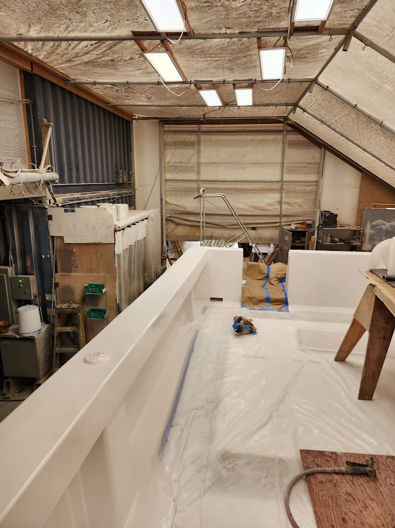
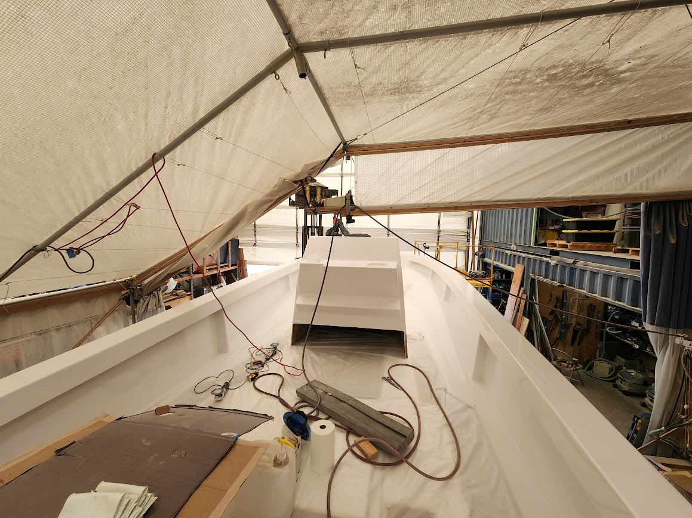

Fabrication / Mechanical Engineering
Navatek Boat Builders
Fiberglass layups, grinding, sanding, power tools
Introduction
I spent the summer 2024 as an engineering intern at Navatek boat builders and closely with FLS composites. Navatek boat builders specializes in custom marine vehicles designed for the rough and challenging conditions offshore in Hawaii. As sister companies to Pacific Shipyards International, projects often involved marine fiberglass and bodywork. The focal project of my time there was building a Seablade 42, which is a large powerboat designed by Navatek.
My Role
I immediately jumped into work on the floor. It was hands on from the start, working with power tools, sand paper, paint, solvents, etc. The two inch angle grinder became my best friend as I shaped, filled, glassed, and sanded my way through the summer.
SeaBlade 42 build
We got a large bare hull into the shop and work began fitting all components into it. To start, we painted the fuel tank area to coat the fiberglass, and lowered in the large tank with a forklift. The hull came with no deck or gunwhale attached, so work began to fabricate and integrate those components. The deck required heavy sanding around the edges to bond, so I used a powerful 4-1/2" grinder to get those down. The deck installation took a few attempts, using markers to identify areas with slight interferences. After a sufficient fit was achieved, we did a very large and fast layup to secure it in place.
Over the course of the project, we fabricated hunreds of fiberglass parts from scratch. I spent hours in the fabric room measuring and cutting fiberglass and carbon fiber. L beams were fabricated from steel L molds in large batches, cut with an air saw, then bonded with epoxy to reinforce the inner ribs of the hull under the deck. Overall, the project helped me to develop numerous hands-on skills.

Bodywork
A major portion of the boat was a large center console. This was a large out of house made molded fiberglass part with a gel coat finish. Unfortunately, the mold did not release well and left a large gash in the gel coat of the front face. I was tasked with restoring the finish and removing any trace of the defect. Like many projects in this role, it was up to me to figure out the best way to get the job done.
I gave a quick scratch up sand to the defect face and then filled the cavity with bondo. I used an orbital sander to get the it close to level with the rest of the surface, and refilled small air bubbles in a few iterations. I then taped the boundary and sprayed coats of gel coat over the area. Then the tricky part of wet sanding began. It was crucial not to "burn through", which meant going all the way through the gel coat to see exposed bondo. I had a few iterations of this, and eventually ramped my grit to around 3000 grit wet to dry paper. Finally, I used automotive wax and a buffing wheel to get the final scratches out. The result was indistinguishable from the rest of the part and as reflective as a mirror.
This process came in handy for creating the FSAE nose cone mold. The smooth finish was achieved in a similar was and was critical to getting the part to release given the unfavorable geometry.
